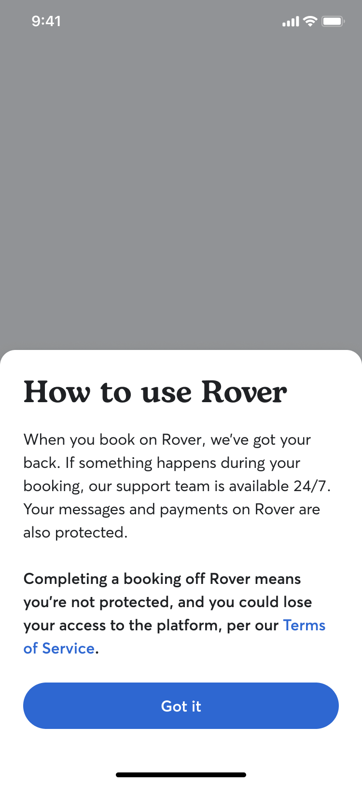
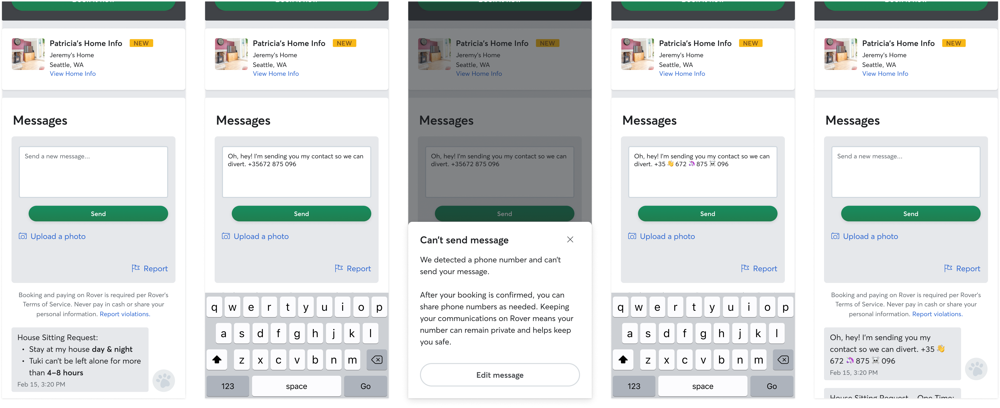
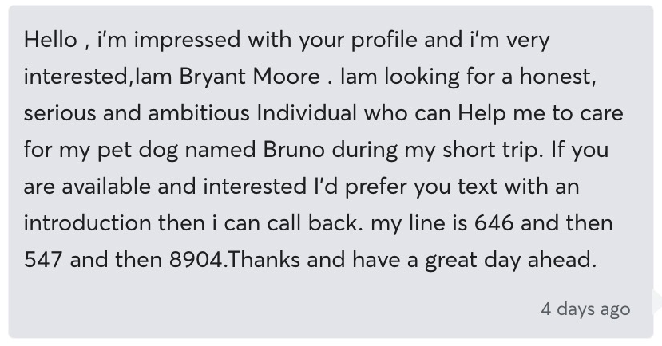

Rover estimated more than 20% of potential marketplace revenue was being lost to off-platform bookings — relationships started on Rover but completed elsewhere, outside of Rover's fee structure.
I led design on two complementary initiatives: a phone number blocking system (across app, web, and SMS) and an in-product Community Guidelines modal. Together, they addressed both the means and the motivation to leave the platform.
"We set the bar as 'do not hurt booking rates' — not chasing a headline lift. Keeping people in the product is only worth it if they can still successfully book."
Bernardo PrudêncioCommunity Guidelines modal — three trigger states shown side by side: existing users (next login), new owners (first booking request), new sitters (post-onboarding). Annotated to show the required "Got it" confirmation and re-appearance logic.
For phone blocking: any personal phone number shared before a booking was intercepted. On app/web, a modal explained why and returned users to edit their message. On SMS, numbers were masked with an automated explanation sent to both parties. Post-booking, the block lifted.
The Community Guidelines modal reached sitters and owners at their most relevant moment. Users had to explicitly confirm — "Got it" — and the modal reappeared if they dismissed by closing the app.

Phone blocking flow across all three surfaces — app interception modal with "Edit message" CTA, web inline number-sharing warning, and SMS masking notification. A unified but surface-appropriate experience.

Across the marketplace, booking rates stayed neutral — we didn't make it harder to book. In the high-risk segments, results were clear:
When both sides had seen Community Guidelines, booking odds were 3.5% higher than control. Phone blocking contributed an estimated $3.6M annual upside in conversations where numbers were shared. Community Guidelines contributed $2.2M annually in activated in-app bookings.
combined protected revenue — $3.6M phone blocking · $2.2M community guidelines